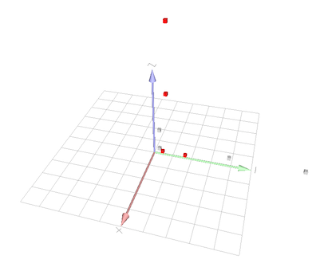

Example of point list import.
- See also
- Image and digital object import/export

Visualisation of 3d imported point list
#include "DGtal/base/Common.h"
#include "DGtal/io/readers/PointListReader.h"
#include "DGtal/io/viewers/PolyscopeViewer.h"
#include "DGtal/io/Color.h"
#include "DGtal/helpers/StdDefs.h"
#include "ConfigExamples.h"
{
std::string inputFilename = examplesPath + "samples/pointList3d.pl";
PolyscopeViewer<> viewer;
for(unsigned int i=0; i<vectPoints.size();i++){
viewer << vectPoints.at(i);
}
vector<unsigned int> vPos;
vPos.push_back(0);
vPos.push_back(2);
vPos.push_back(1);
for(unsigned int i=0; i<vectPoints.size();i++){
viewer << vectPoints.at(i);
}
return 0;
}
Structure representing an RGB triple with alpha component.
void show() override
Starts the event loop and display of elements.
Z3i this namespace gathers the standard of types for 3D imagery.
DGtal is the top-level namespace which contains all DGtal functions and types.
static std::vector< TPoint > getPointsFromFile(const std::string &filename, std::vector< unsigned int > aVectPosition=std::vector< unsigned int >())
 1.18.0
1.18.0